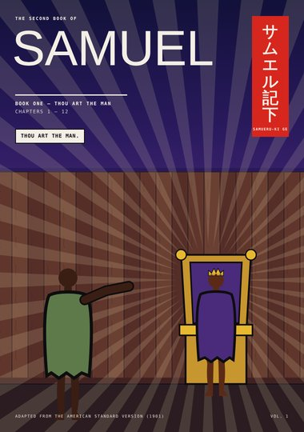
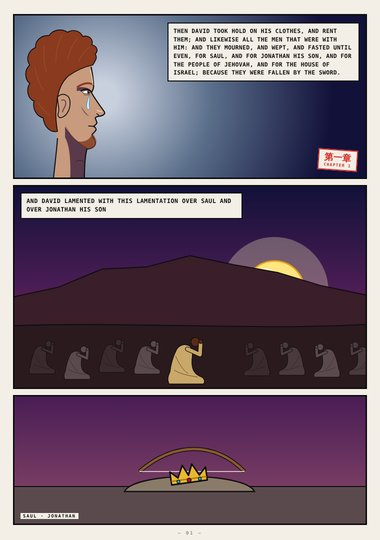
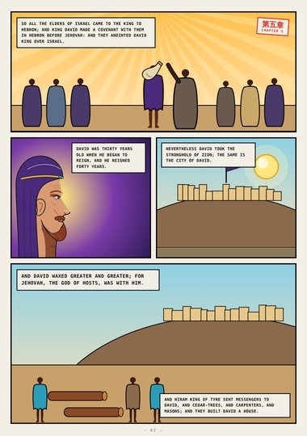
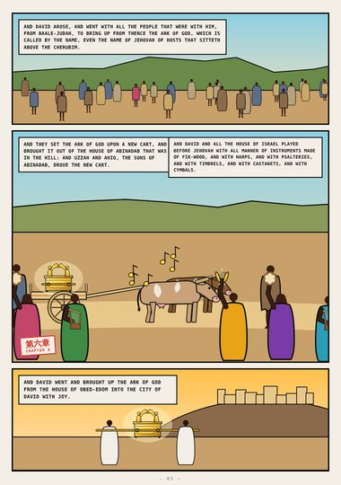
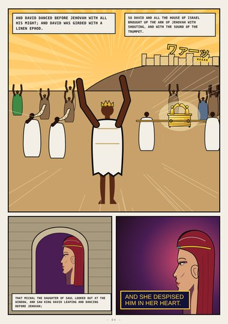
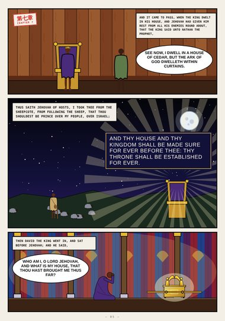
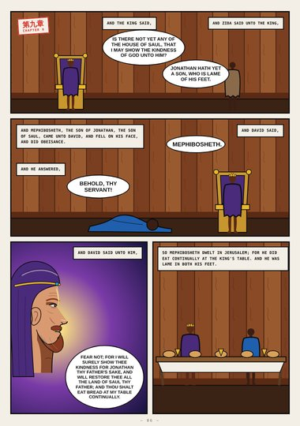
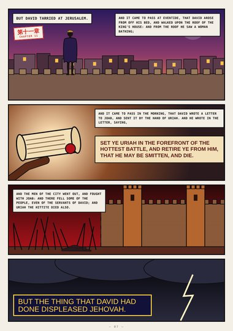
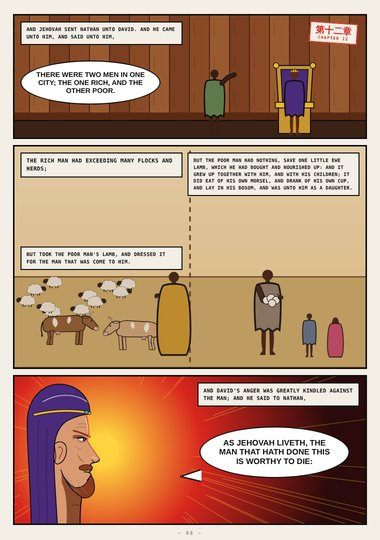
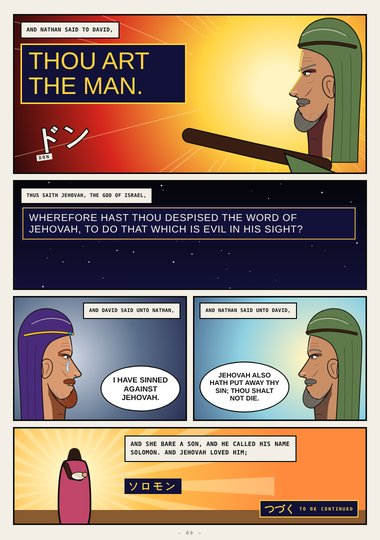

2 Samuel · Book One · 2 Samuel 1–12
Thou Art the Man
David mourns Saul and Jonathan, is anointed king in Hebron and takes Zion, dances before the ark, receives the promise of a house for ever, shows kindness to Mephibosheth, sends Uriah to the forefront of the battle, and hears Nathan's parable of the ewe lamb.
Start reading ›Pages

CoverCover2 Samuel 1–12
Page 1Mourning2 Samuel 1:11–17
Page 2King over All Israel2 Samuel 5:3–11
Page 3The Ark Comes Up2 Samuel 6:2–12
Page 4Dancing before Jehovah2 Samuel 6:14–16
Page 5For Ever2 Samuel 7:1–18
Page 6Mephibosheth2 Samuel 9:3–13
Page 7The Letter2 Samuel 11:1–27
Page 8The Ewe Lamb2 Samuel 12:1–5
Page 9Thou Art the Man2 Samuel 12:7–24